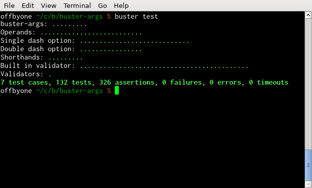

Node testing
Note: this document is work in progress
Getting started
To set up Node testing, specify "node" as the environment in your
config file.
var config = module.exports;
config["My tests"] = {
env: "node",
tests: [
"**/*-test.js"
]
}
This config file will load all something-test.js in the same folder
as the config file and all sub folders. Unlike browser tests, you don't need
to specify your source files with "sources". In fact, doing so
will only make the tests slower, as the config file takes longer time to
load. Instead, you do what you always do in Node: require the modules you use
in the files where you need to use them.
var buster = require("buster");
var myLib = require("../lib/my-lib");
buster.testCase("A test case", {
"test it": function () {
assert(true);
}
})
As we can see, we also need to require Buster.JS
itself. The "buster" module provides all the core functionality
such as test cases, assertions, and more.
Running tests
To run the tests, simply type:
buster test
Here's the test output for the buster-args module.

See TODO: link to documentation for more information about the options you can pass to buster test.